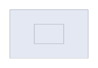
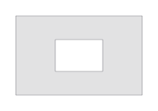

Typography audit · 11 October 2026 · Muusia 2.117
Letters are
drawings.
Muusia already has most of the ingredients for a much richer typography system. The useful next step is to connect its text, texture and motion tools through a shared understanding of a letter.
Explore 12 real-node specimens ↓All 311 built-in definitions screened, including hidden legacy entries. Focused implementation review and geometry probes for the shortlist. The gallery uses existing node code; proposals are labelled separately. Local research, not a published Learn lesson.
Four ways in
Treat the letter as a route. Grow hair, coils, threads or contour bands along its strokes.
Text → Mycelium Fill / SDF Contours / Zigzag PathTreat the letter as an area. Draw patterns in its ink region while preserving the holes.
Lettering → Pattern Fill / Hatch Fill / ImageTreat the letter as a set of little marks. Vary the mark, direction, density and boundary treatment.
Stitch Type / Cross Stitch / Image / ASCII ArtTreat each glyph as an identifiable object. Move, exchange and eventually morph letters independently.
Concrete Poetry / Text on Path → proposed shared glyph layoutWorks with existing nodes
A small type foundry.
These are actual computed pen paths, shown at 0.3 mm stroke width on a 200 × 140 mm sheet. Download a patch and open it in Muusia. The SVGs are research renders, not UI screenshots or captured app exports.
Proposed work · nothing implemented here
What I would build next
A shared letter foundation
First / Text + Lettering + Concrete PoetryRetain character, word and line identity alongside paths; expose a clean face outline separately from extrusion or texture. Share spacing and baseline logic. Define counters explicitly. This unlocks whole-letter colours, motion, fills and matching without repeating font code in every effect.
Lettering materials
Next / existing modifiers + presetsMake a small, tested preset family: contour, root, hairy, serpentine, hatched and tiled type. Reuse SDF Contours, Mycelium Fill, Fur, Fray, Zigzag Path, Pattern Fill and Image. Keep these graph recipes first; add node controls only when a recipe becomes awkward.
Custom-cell typography
Extend / Stitch TypeAdd a blue custom-mark input and controlled variations per cell. Grid Hairs supplies directional bundles; Glyph Halftone supplies decorative marks. Keep Stitch Type’s existing core, edge, halo and pen structure. Tiny microbial motifs could then build a letter through the same system.
Letters with independent lives
Extend / Concrete PoetryUse glyph IDs for whole-letter bend, stretch, falling / reassembly, colour and staggered phase. Reuse Gravity’s release logic, Stretch’s bands and existing motion clocks. For 24–48 frame loops, keep layout and seeds stable; make a deliberate return to the starting composition.
Better ribbon & path type
Extend / Ribbon Type + Text on PathExpand Ribbon Type beyond lowercase a–z and adapt useful join / band logic from Ribbon and Woven Ribbon. Add an envelope-bend option to Text on Path alongside its tangent placement. Keep their distinct roles; a single giant ribbon node would make text layout harder to find.
Living and morphing words
Later / bounded experimentsConstrain Coral or Microbes to letter regions; give Murmuration text-derived formation targets. For word morphs, reuse Morph Layers’ resampling but add continuous phase and character-aware correspondence. These are new algorithms to validate, not chains that currently work by plugging in text.
Recommended first prototype: shared glyph grouping plus a small “lettering materials” specimen patch set. Then custom marks in Stitch Type. Both give visible results while improving existing typography tools.
Implementation findings
The holes matter.
A closed centreline and a thick letter outline are different shapes. And two nested outlines only make an O if the next node understands the hole.


What the probes confirmed
- The same Container / Hatch Fill distinction occurs with a real Lettering “O”.
- Image’s filled Drawing input kept the nested centre white. Its nesting is evaluated per source pen.
- Text provides built-in uppercase letters, digits, ÄÖÅ and limited punctuation. It is not a general OpenType font loader.
- A Pen Cycle or Explosion acts on paths. Parts of one letter can get different pens or move apart.
Other integration details
- Wind Tunnel and Zen Garden treat closed contours as solid obstacles. Do not assume counter-aware text masking.
- Concrete Poetry’s Region filters glyph centres. Complete strokes can cross the boundary.
- Glyph Halftone uses decorative marks and has no Drawing input. Primitive Image also needs a file image today.
- Morph Layers produces at most 12 layers. In the 48-frame probe, frame 12 and frame 48 were identical. A 48-frame loop requires an extension.
External fonts today: convert text to paths in the authoring program and use Import SVG. Muusia’s importer does not turn SVG text / CSS into font outlines.
Plotter-specific choices
Design at pen size.
Decide the cap height, actual pen width and narrowest gap before judging a texture. Small counters are easy to close with a coil or a wide outline. Previewed line weight is not the physical width the machine will draw.
The specimen metrics show pen-down length and path count, not estimated plotting time. Squares, dots and tiny marks can require many lifts even when their line length is modest.
For a 24–48 sheet loop
Keep the letters stable.
Choose a fixed layout, camera and seed. Drive width, displacement or cell phase with a periodic value; whole-block rotation is only one option. Check the last-to-first transition, counter clearance and consistent pen assignment.
A topology-changing effect such as merging contours can look excellent, but it needs a visual seam check. A glyph-aware morph also needs a policy for punctuation, changing word length and letters with different numbers of strokes.
Complete catalogue screen
Where every node fits
Each entry has one primary reuse category. “Geometry probe” means it ran in a specimen or diagnostic here; other entries are based on definitions, catalogue text and focused source inspection. A motif rating is not a claim that every generator accepts a text mask.
| Node | Primary role | Typography assessment |
|---|
No nodes match this filter.
Reproducibility
Evidence, with limits.
Every gallery patch was checked against the current parameter definitions and pin types, then evaluated twice with the actual node methods. Checks cover non-empty output, finite coordinates, pen indices and deterministic results. The nested-ring and letter-O probes check region semantics. This is a focused typography audit, not a complete regression test of all 311 nodes.